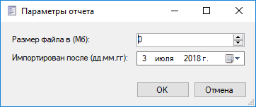
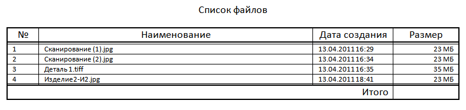

Генерация отчёта из кода |
В данном примере рассмотрена генерация отчета из кода макроса.
C#
/* Дополнительные ссылки TFlex.DOCs.Common.dll TFlex.Reporting.dll */ using System; using System.Collections.Generic; using System.Linq; using TFlex.DOCs.Model.Macros; using TFlex.DOCs.Model.Macros.ObjectModel; using TFlex.DOCs.Model.References; using TFlex.DOCs.Model.References.Files; using TFlex.DOCs.Model.References.Reporting; using TFlex.DOCs.Model.Search; using TFlex.DOCs.Model.Structure; using ReferenceObjectWithLink = TFlex.DOCs.Model.References.Reporting.ReferenceObjectWithLink; public class Macro : MacroProvider { // Guid объекта отчета private readonly Guid _reportId = new Guid("ad7d10c2-0766-4998-b42c-b6a565d5b2f1"); // Guid параметра размер файла private readonly Guid _fileSizeId = new Guid("1cc37816-33dc-4de4-bcfd-645041795012"); public Macro(MacroContext context) : base(context) { } public override void Run() { // Создаем диалог для ввода параметров ДиалогВвода pd = СоздатьДиалогВвода("Параметры отчета"); string sizeFile = "Размер файла в (Мб):"; string importAfter = "Импортирован после (дд.мм.гг):"; pd.ДобавитьЦелое(sizeFile, 0, true); pd.ДобавитьДату(importAfter, DateTime.Now, true); if (!pd.Показать()) return; int fileSize = pd.Значение(sizeFile); // Размер файла в (Мб) DateTime importDate = pd.Значение(importAfter); // Дата импорта var fileReference = new FileReference(Context.Connection); // Создаем экземпляр справочника "Файлы" для поиска объектов List<ReferenceObject> foundObjects; using (Filter filter = new Filter(fileReference.ParameterGroup)) // Формируем фильтр { // Размер файла filter.Terms.AddTerm(fileReference.ParameterGroup[_fileSizeId], ComparisonOperator.GreaterThanOrEqual, fileSize); // Дата создания filter.Terms.AddTerm(fileReference.ParameterGroup[SystemParameterType.CreationDate], ComparisonOperator.GreaterThan, importDate); foundObjects = fileReference.Find(filter); // Применяем фильтр } if (foundObjects.Count == 0) Ошибка("Вывод отчета с заданным фильтром", "Нет файлов удовлетворяющих заданному условию"); // Создаем список объектов справочника с информацией о подключении к родительским объектам var referenceObjectWithLinks = foundObjects.Select(obj => new ReferenceObjectWithLink(obj)); // Формируем контекст отчета на основе найденных объектов ReportGenerationContext reportContext = ReportGenerationContextFactory.CreateContext(referenceObjectWithLinks); // Формируем контекст отчета на основе найденных объектов reportContext.OpenFile = true; // Указываем необходимость открытия файла после генерации отчета Report report = Context.Connection.References.Reports.Find(_reportId) as Report; // Ищем отчет в справочнике отчетов if (report is null) Ошибка("Вывод отчета с заданным фильтром", "Не найден отчет"); // Генерируем отчет с заданным контекстом report.Generate(reportContext); } }
Окно установки значений параметров для поиска объектов

Сгенерированный отчет:
